�W・その他
・77年7月condenser caytridge & tonearms
コンデンサー型カートリッジCP-Y、トーンアームUA-7/cf、イコライザーECP-1の紹介資料
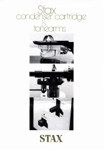
77年7月condenser caytridge & tonearms
・78年9月新製品案内
プリアンプCA-X、トーンアームUA-90、ラウドスピーカーELS-8X、4Xの紹介資料
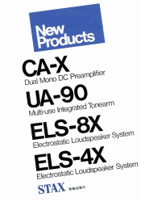
78年9月新製品案内・'81新製品資料
1981年発売のラウドスピーカーELS-F81及びパワーアンプDA-50Mの紹介資料。
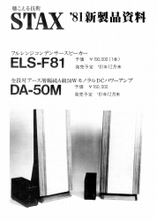
'81新製品資料・ＳＲ-84パッケージ箱書き 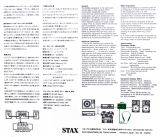
SR-84のパッケージの箱書き。取扱説明の代わりか？
・無酸素銅 超高品質高性能ワイヤー 発売案内
スタックスが1980年代中盤以降、力を入れたオーディオ用線材の第一段
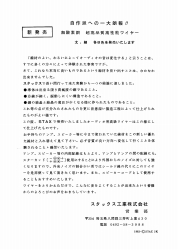
高性能ワイヤー発売案内 （「蒼乃雑記」蒼乃さんの提供）・EK-1/MK2アッセンブリー・マニュアル 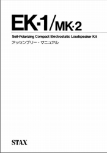
小型コンデンサースピーカーキッドEK-1/MK2の組立マニュアル。�泣Xタックス様から提供していただきました。なお、中には回路図がありますが、もし自作される方がいらっしゃるなら「感電に注意！」とのことです。
・Music Library
System
図書館等の音楽視聴システムへのイヤスピーカー導入案内
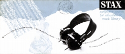
Music Library System・new5(1987/9)
真空管使用のドライバーSRM-T1、同社最大のパワーアンプDMA-X1、ラウドスピーカーELS-8XBB及びF81Xの紹介資料。
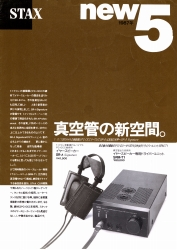
new5(1987/9)・DMA-X1新製品資料
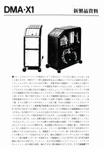
DMA-X1新製品資料・SR-Σ（シグマ）Professional新製品資料
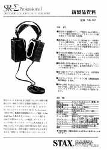
SR-Σ（シグマ）Professional新製品資料・ELS-8X・BB新製品資料
当時STAXで最大のコンデンサー型スピーカーELS-8Xの改良版。
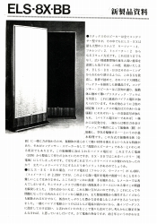
ELS-8X・BB新製品資料・1989Autumn新製品ニュース
ドライバーユニットSRM-1/Mk-2
PP、DAコンバーターDAC-Xt、コンデンサー型スピーカーELS-F83X
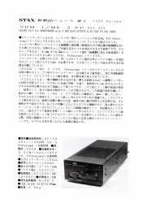
・APERIO ALPHA1パッケージ箱書き
APERIO
ALPHA1のパッケージの箱書き。取扱説明書はなかった。
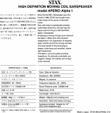
APERIO ALPHA1パッケージ箱書き・DAC-TALENT新製品資料
コンパクトなDAコンバーターDAC-TALENTの紹介資料。日本語部分は文字のみ。英文資料付き。
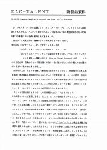
DAC-TALENT新製品資料・SRM-X PRO新製品資料
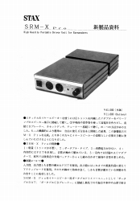
SRM-X PRO新製品資料・SRM-T1S新製品資料
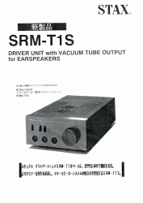
SRM-T1S新製品資料・1994Autumn新製品資料
Lambda Novaシリーズの新製品資料
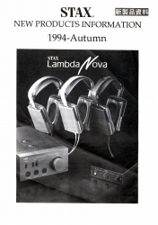
・SR-001新製品資料
SR-001発売の前月に配布された紹介資料。
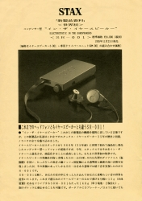
SR-001新製品資料・?1996年価格表
新体制（有限会社）�Uなった直後？の価格表。興味深いのは、スピーカー端子接続型のSRD-7/MK2を残すつもりだったこと、インナーイヤー型のＳＲ-001以外では、イヤスピーカーをSR-Λ(ラムダ)の系統に絞る意図が明確だったことである。
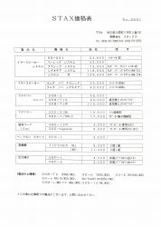
1996年価格表・STAXの建物
雑司ヶ谷と株式会社時代の三芳社屋の画像。
・APERIOシリーズ
ケーブルやそのホルダーなどの解説。
トップページへ